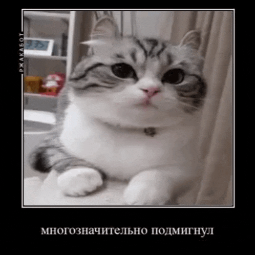

Наш дискордик
JustGM - бот для создания гифок из фотографий, изначально был INLESS GM (для сервера INLESS), но после закрытия сервера переменовался.
Как использовать? Открываем чат с JustGM , и отправляем ему фотку(на момент 13.09 не работает, используйте следующий способ), далее выберите тип гифки: обычная или мем, и в итоге получаете свою гифку. Так же можно использовать команду /gif которая работает не только в лс но и на дискорд серверах, принцип почти тот же, пишите /gif и вставляете фото
Первый мой бот с Genes1us
TSync - бот для синхронизации игроков Тупо сервер(или же neli.su) в дискорде(роли, ники, итд)
На момент 13.09 бот не работает тк сервер закрыт!
Как использовать? Устанавливаете бота на сервер , после его установки используем /setting и настраиваем как нам нужно, далее настраиваем роли с помощью /set_default_role (роль игрока), и /set_role (для других ролей) и юзаем /sync. Все! При заходе пользователя на дискорд сервер он автоматически синхронится(если вы это настроили)
Второй мой бот и первая база данных с Genes1us
Just messages - мой тестовый бот как пример что мы умеем, с помощью него можно скинуть фото или текст в специальный канал в виде эмбеда(для майнкрафт серверов например, канал фотографии)
Как использовать? Заходите в наш дискорд , и в этот канал отправляются все сообщения и фото, нажимаете на бота и пишите ему что хотите отправить(поддерживается фото и текст), подтверждаете и все!
Мой бот, делал сам